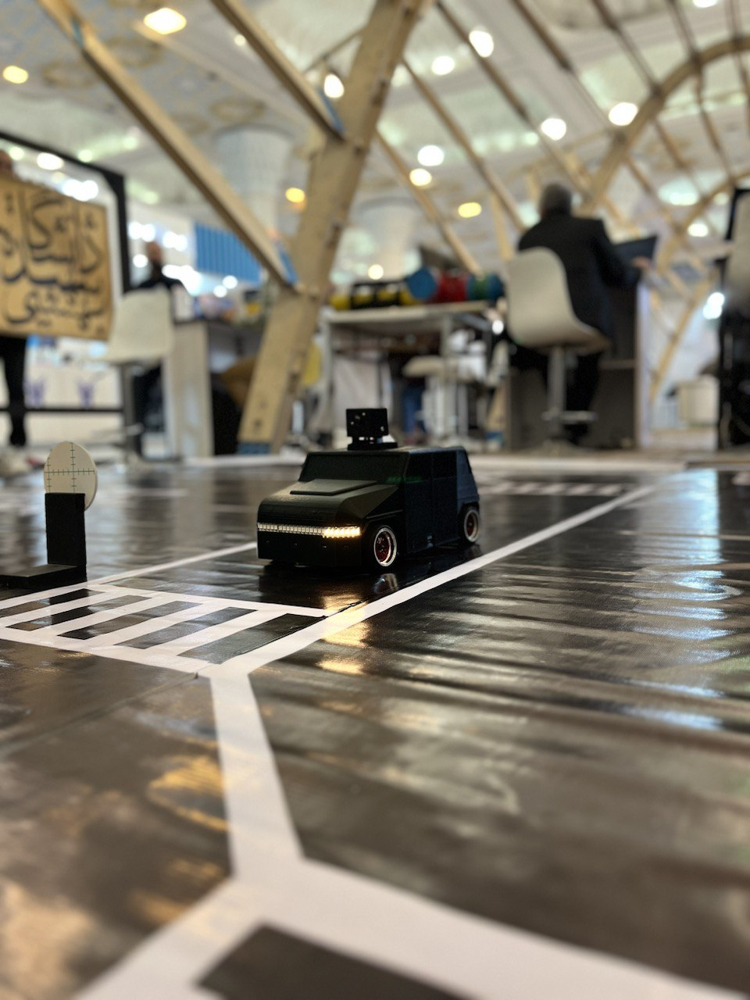
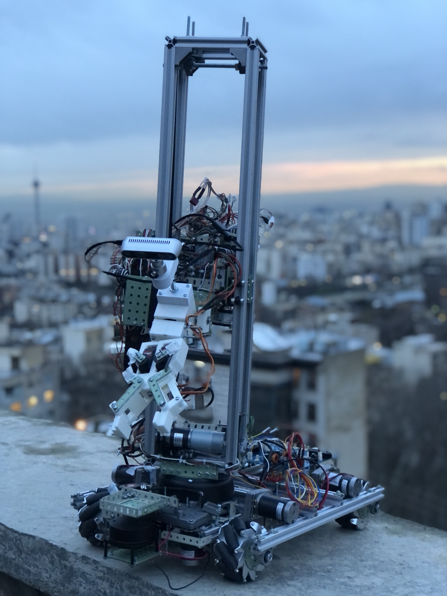
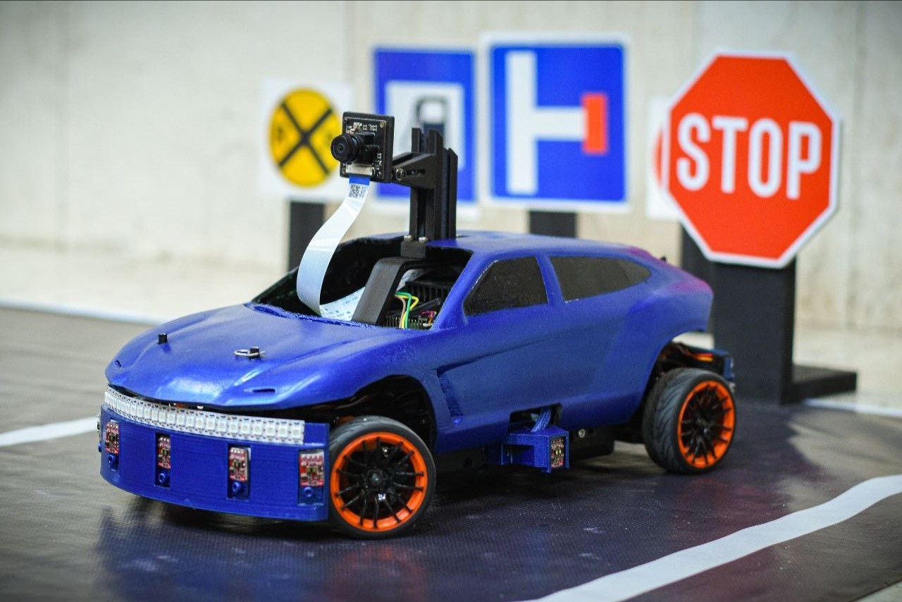

Two robots were constructed in this laboratory using image processing algorithms, artificial intelligence, and the assistance of sensors mounted on the robots. These robots detect environmental features such as road lines, guide signs, driving conditions, and the presence of obstacles. They then make appropriate decisions using control algorithms. These algorithms are integrated using ROS and RTOS. Furthermore, the electronic board design for these robots has been completed entirely within the laboratory.
Auriga’s @WORK consists of two mechanical parts: a mobile chassis and an arm. This robot constructs a map of its surrounding environment using LiDAR sensor, IMU and depth-camera. Then, utilizing the perception gathered from the environment, it employs path planning algorithms to find its optimal route from the origin to the destination and autonomously navigates to the desired endpoint. Moreover, this robot is capable of detecting and picking up specific objects found in industrial environments. Overall, the primary task of this robot is object manipulation and transportation within an industrial setting. The hardware design and construction of the robot, including both mechanical and electronic aspects, have been fully realized in this laboratory. The software design and implementation of this robot also encompass various cutting-edge technologies such as image processing, artificial intelligence, control and decision-making, simultaneous localization and mapping (SLAM), sensor fusion and robot operating systems.
Mobile Communications Company of Iran (MCI) R&D Center, Design and Construction of an Intelligent Self-driving Robot, 2023
